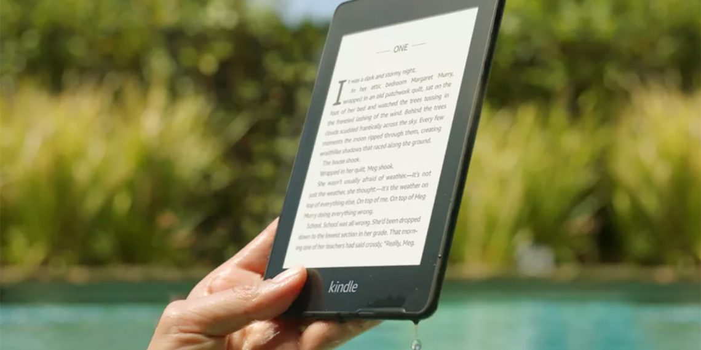
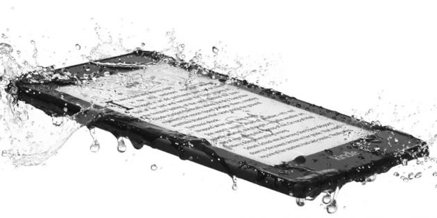

Amazon представила водонепроницаемую читалку Kindle Paperwhite

Ридер стал тоньше, легче и ярче
Amazon обновила читалку Kindle Paperwhite: теперь она похожа на более дорогую Kindle Oasis. Ридер стал водонепроницаемым, а также более лёгким и тонким.
Kindle
Paperwhite
лучше
одноимённого
предшественника
практически
во
всём. Экран покрыт бесшовным стеклом, светодиодная подсветка стала ярче, появилась поддержка аудиокниг из сервиса Audible, которые можно слушать в
Bluetooth-наушниках. Объём памяти базовой модели вырос до 8 ГБ, также доступна версия с 32 ГБ.
Читалка защищена от промокания

Читалка защищена от промокания по стандарту IPX8: её можно опустить в воду
на глубину до 1,8 м на целый час. Поэтому читать книги в ванной, у бассейна или на пляже теперь совершенно безопасно.
Ридер на 23 г легче и почти на миллиметр тоньше предыдущей модели Kindle Paperwhite. Экран по-прежнему 6" с разрешением 300 ppi.